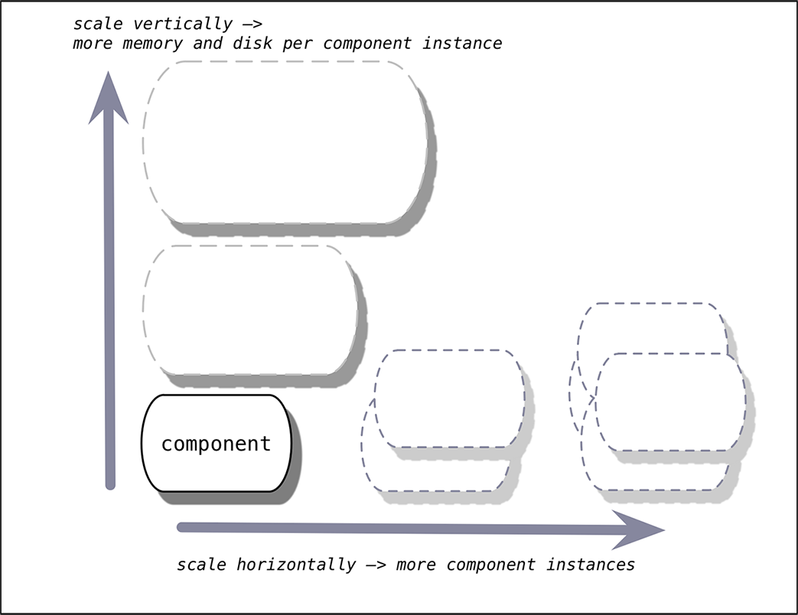

To increase the capacity and availability of the Cloud Foundry platform, and to decrease the chances of downtime, you can scale a deployment up using the strategies described below.
This topic also describes the requirements for a zero downtime deployment. A zero downtime deployment ensures that if individual components go down, your deployment continues to run.
This section describes the required configurations for achieving a zero downtime deployment.
Deploy at least two instances of every application.
Scale your components as described in the Scaling Platform Availability section below. Components should be distributed across two or more availability zones (AZs).
Ensure that you allocate and maintain enough of the following:
Configure your resource pools according to the requirements of your deployment.
You can scale platform capacity vertically by adding memory and disk, or horizontally by adding more VMs running instances of Cloud Foundry components.

The nature of a particular application should determine whether you scale vertically or horizontally.
DEAs:
The optimal sizing and CPU/memory balance depends on the performance characteristics of the apps that will run on the DEA.
Router:
Scale the router with the number of incoming requests. In general, this load is much less than the load on DEA nodes.
Health Manager:
The Health Manager works as a failover set, meaning that only one Health Manager is active at a time. For this reason, you only need to scale the Health Manager to deal with instance failures, not increased deployment size.
Cloud Controller:
Scale the Cloud Controller with the number of requests to the API and with the number of apps in the system.
To scale the Cloud Foundry platform for high availability, the actions you take fall into three categories.
Note: Data services may have single points of failure depending on their configuration.
You can think of components that support multiple instances as scalable processes. If you are already scaling the number of instances of such components to increase platform capacity, you need to scale further to achieve the redundancy required for high availability.
| Component | Number | Notes |
|---|---|---|
| Load Balancer | 1 | |
| NATS Server | ≥ 2 | If you lack the network bandwidth, CPU utilization, or other resources to deploy two stable NATS servers, Pivotal recommends that you use one NATS server. |
| HM9000 | ≥ 2 | |
| Cloud Controller | ≥ 2 | More Cloud Controllers help with API request volume. |
| Gorouter | ≥ 2 | Additional Gorouters help bring more available bandwidth to ingress and egress. |
| Collector | 1 | |
| UAA | ≥ 2 | |
| DEA | ≥ 3 | More DEAs add application capacity. |
| Doppler Server (formerly Loggregator Server) | ≥ 2 | Deploying additional Doppler servers splits traffic across them. |
| Loggregator Traffic Controller | ≥ 2 | Deploying additional Loggregator Traffic Controllers allows you to direct traffic to them in a round-robin manner. |
You can think of components that do not support multiple instances as single-node processes. Since you cannot increase the number of instances of these components, you should choose a different strategy for dealing with events that degrade availability.
First, consider the components whose availability affects the platform as a whole.
HAProxy:
Cloud Foundry deploys with a single instance of HAProxy for use in lab and test environments. Production environments should use your own highly-available load balancing solution.
NATS:
You might run NATS as a single-node process if you lack the resources to deploy two stable NATS servers.
Cloud Foundry continues to run any apps that are already running even when NATS is unavailable for short periods of time. The components publishing messages to and consuming messages from NATS are resilient to NATS failures. As soon as NATS recovers, operations such as health management and router updates resume and the whole Cloud Foundry system recovers.
Because NATS is deployed by BOSH, the BOSH resurrector will recover the VM if it becomes non-responsive.
NFS Server:
For some deployments, an appropriate strategy would be to use your infrastructure’s high availability features to immediately recover the VM where the NFS Server runs. In others, it would be preferable to run a scalable and redundant blobstore service. Contact Pivotal PSO if you need help.
SAML Login Server:
Because the Login Server is deployed by BOSH, the BOSH resurrector will recover the VM if it becomes non-responsive.
Secondly, there are components whose availability does not affect that of the platform as a whole. For these, recovery by normal IT procedures should be sufficient even in a high availability Cloud Foundry deployment.
Syslog:
An event that degrades availability of the Syslog VM causes a gap in logging, but otherwise Cloud Foundry continues to operate normally.
Because Syslog is deployed by BOSH, the BOSH resurrector will recover the VM if it becomes non-responsive.
Collector:
This component is not in the critical path for any operation.
Compilation:
This component is active only during platform installation and upgrades.
Etcd:
Etcd is a highly-available key value store used for shared configuration and service discovery. More information on running etcd on single node is available here
For database services deployed outside Cloud Foundry, plan to leverage your infrastructure’s high availability features and to configure backup and restore where possible.
Contact Pivotal PSO if you require replicated databases or any assistance.